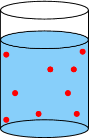

<code>
(0,0)(1,1)
\newrgbcolor{skyblue}{0.53 0.81 0.98}
\psframe[fillcolor=skyblue,fillstyle=solid,linestyle=none](0,0)(3,3)
\psellipse[fillcolor=skyblue,fillstyle=solid](1.5,3)(1.5,0.3)
\psline(0,4)(0,0)
\psline(3,0)(3,4)
\psellipse(1.5,4)(1.5,0.3)
\psellipse[fillcolor=skyblue,fillstyle=solid](1.5,0)(1.5,0.3)
\pscircle[fillcolor=red,fillstyle=solid,linestyle=none](1,0.9){0.1}
\pscircle[fillcolor=red,fillstyle=solid,linestyle=none](1.3,2){0.1}
\pscircle[fillcolor=red,fillstyle=solid,linestyle=none](2.3,0.7){0.1}
\pscircle[fillcolor=red,fillstyle=solid,linestyle=none](0.5,1.5){0.1}
\pscircle[fillcolor=red,fillstyle=solid,linestyle=none](0.3,2.2){0.1}
\pscircle[fillcolor=red,fillstyle=solid,linestyle=none](1.8,1.8){0.1}
\pscircle[fillcolor=red,fillstyle=solid,linestyle=none](0.2,0.3){0.1}
\pscircle[fillcolor=red,fillstyle=solid,linestyle=none](0.4,0.8){0.1}
\pscircle[fillcolor=red,fillstyle=solid,linestyle=none](2.2,1.9){0.1}
\pscircle[fillcolor=red,fillstyle=solid,linestyle=none](0.9,1.1){0.1}
\pscircle[fillcolor=red,fillstyle=solid,linestyle=none](1.5,2.3){0.1}
\pscircle[fillcolor=red,fillstyle=solid,linestyle=none](1,2.1){0.1}
\pscircle[fillcolor=red,fillstyle=solid,linestyle=none](0.2,2.5){0.1}
\pscircle[fillcolor=red,fillstyle=solid,linestyle=none](2.6,0.5){0.1}
\pscircle[fillcolor=red,fillstyle=solid,linestyle=none](2.7,1.7){0.1}
\pscircle[fillcolor=red,fillstyle=solid,linestyle=none](1.6,0.7){0.1}
\pscircle[fillcolor=red,fillstyle=solid,linestyle=none](1.7,1.2){0.1}
\pscircle[fillcolor=red,fillstyle=solid,linestyle=none](2,1.3){0.1}
\pscircle[fillcolor=red,fillstyle=solid,linestyle=none](2.8,2.6){0.1}
\pscircle[fillcolor=red,fillstyle=solid,linestyle=none](2.5,2.4){0.1}
\pscircle[fillcolor=red,fillstyle=solid,linestyle=none](2.1,2.5){0.1}
\pscircle[fillcolor=red,fillstyle=solid,linestyle=none](1.7,2){0.1}
\pscircle[fillcolor=red,fillstyle=solid,linestyle=none](1.3,1.5){0.1}
\pscircle[fillcolor=red,fillstyle=solid,linestyle=none](1.1,1.4){0.1}
\pscircle[fillcolor=red,fillstyle=solid,linestyle=none](0.9,1.6){0.1}
\pscircle[fillcolor=red,fillstyle=solid,linestyle=none](0.7,2.4){0.1}
\pscircle[fillcolor=red,fillstyle=solid,linestyle=none](2.7,0.8){0.1}
\pscircle[fillcolor=red,fillstyle=solid,linestyle=none](2.6,1.2){0.1}
\pscircle[fillcolor=red,fillstyle=solid,linestyle=none](0.7,0.5){0.1}
\pscircle[fillcolor=red,fillstyle=solid,linestyle=none](0.9,0.6){0.1}
\pscircle[fillcolor=red,fillstyle=solid,linestyle=none](0.2,1.5){0.1}
\pscircle[fillcolor=red,fillstyle=solid,linestyle=none](0.4,1.8){0.1}
\pscircle[fillcolor=red,fillstyle=solid,linestyle=none](1.4,1){0.1}
\pscircle[fillcolor=red,fillstyle=solid,linestyle=none](1.9,0.9){0.1}
\pscircle[fillcolor=red,fillstyle=solid,linestyle=none](2,0.7){0.1}
\pscircle[fillcolor=red,fillstyle=solid,linestyle=none](2.2,1.5){0.1}
\pscircle[fillcolor=red,fillstyle=solid,linestyle=none](2.3,1.2){0.1}
\pscircle[fillcolor=red,fillstyle=solid,linestyle=none](0.5,1.2){0.1}
\pscircle[fillcolor=red,fillstyle=solid,linestyle=none](1.3,2.4){0.1}
\pscircle[fillcolor=red,fillstyle=solid,linestyle=none](2.5,2){0.1}
\pscircle[fillcolor=red,fillstyle=solid,linestyle=none](1.3,0.5){0.1}
</code>A concentrated solution has a lot of solute molecules (red circles) in the solvent.

<code>
(0,0)(1,1)
\newrgbcolor{skyblue}{0.53 0.81 0.98}
\psframe[fillcolor=skyblue,fillstyle=solid,linestyle=none](0,0)(3,3)
\psellipse[fillcolor=skyblue,fillstyle=solid](1.5,3)(1.5,0.3)
\psline(0,4)(0,0)
\psline(3,0)(3,4)
\psellipse(1.5,4)(1.5,0.3)
\psellipse[fillcolor=skyblue,fillstyle=solid](1.5,0)(1.5,0.3)
\pscircle[fillcolor=red,fillstyle=solid,linestyle=none](0.2,0.3){0.1}
\pscircle[fillcolor=red,fillstyle=solid,linestyle=none](0.2,2.5){0.1}
\pscircle[fillcolor=red,fillstyle=solid,linestyle=none](2.6,0.5){0.1}
\pscircle[fillcolor=red,fillstyle=solid,linestyle=none](2.8,2.6){0.1}
\pscircle[fillcolor=red,fillstyle=solid,linestyle=none](1.7,2){0.1}
\pscircle[fillcolor=red,fillstyle=solid,linestyle=none](2.3,1.2){0.1}
\pscircle[fillcolor=red,fillstyle=solid,linestyle=none](0.5,1.2){0.1}
\pscircle[fillcolor=red,fillstyle=solid,linestyle=none](2.5,2){0.1}
\pscircle[fillcolor=red,fillstyle=solid,linestyle=none](1.3,0.5){0.1}
</code>A dilute solution has few solute molecules (red circles) in the solvent.